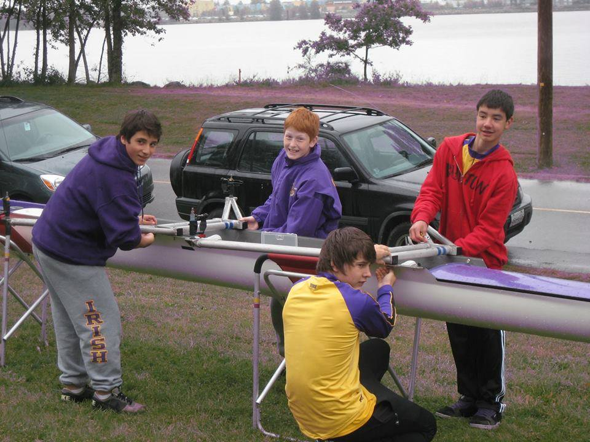
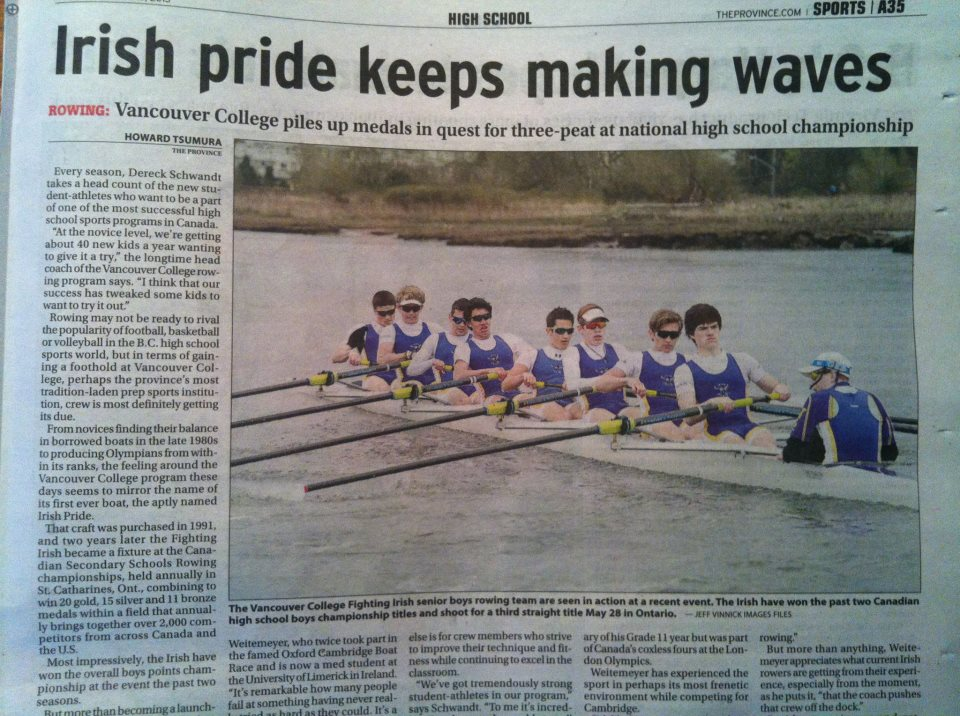
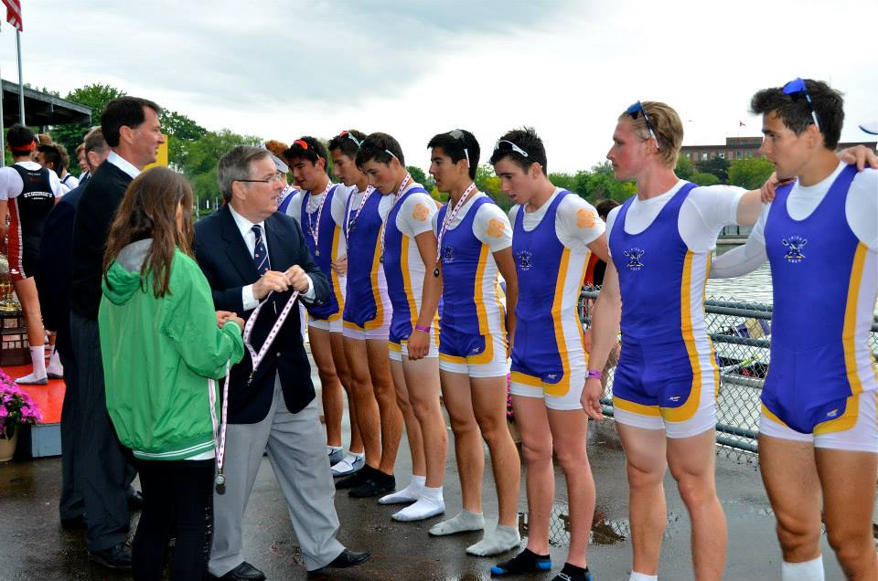
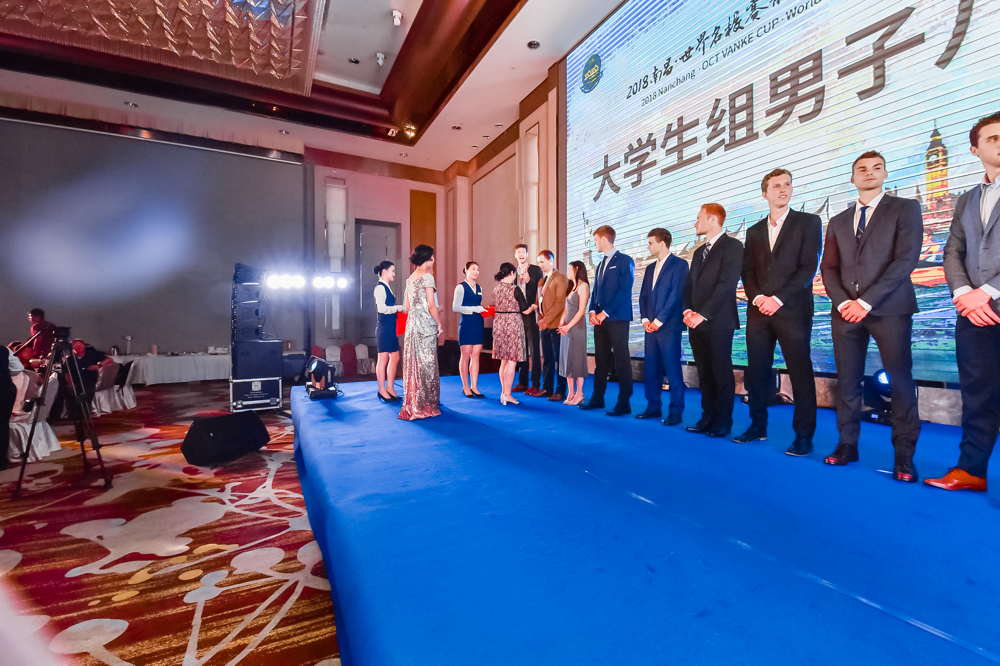
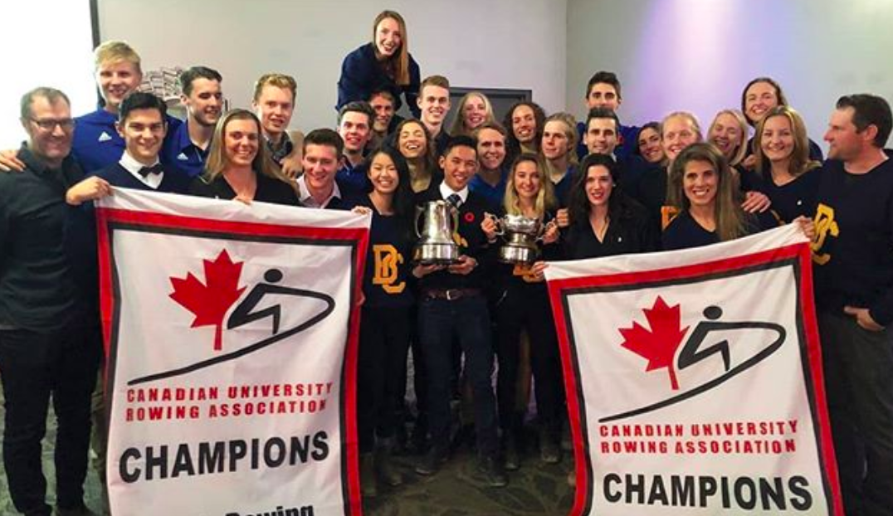

Sawyer Precious
Hi, I'm Sawyer. I'm an iOS developer at Eventbase. I currently mainly
work on the Eventbase iOS platform, building new functionality and improving the existing
codebase. Before I started working full time, I was a student at the University
of British Columbia majoring in business and computer science.
In my previous life, I was defined by the sport of rowing. My story as a
high-performance athlete began as an eighth grader. It came to an end when I
crossed the finish line in my last University race at the end of March 2019. Over
the course of those ten years, I fell in love with the sport,
made friends for life, and won multiple national championships.
More importantly, I learned how to push myself to my breaking point, and then push
a little bit further.
The lessons I learned through my rowing career colour how I approach every challenge
I face. I believe in making ideas a reality, working to achieve goals, and using
every possible opportunity to improve. My attitude has allowed me to build leadership,
communication, and problem-solving skills in projects that I have been involved in
personally and professionally. Like I did in my rowing
career, I want to work hard every single day, build relationships, and win.
Technical Work Experience
Mobile Developer
Eventbase Technology Inc.June 2019 - Present | Vancouver, BC
- Build apps to enhance the attendee experience at events and conferences
- Mostly use Swift, but work in Objective-C when updating the legacy codebase
- Work on fixing bugs in core product and extending current functionality
- Most recent major project has been designing and building an iOS OAuth library to allow client apps to login with various providers easily, avoiding otherwise complex and time-intensive custom work
Junior Software Developer
Zenxmed Innovations Inc.May 2018 - August 2018 | Vancouver, BC
- Worked with full-stack team to extend the functionality of the OpenXmed iPhone app, a Wikipedia-like tool used by physicians to improve client care and reduce misdiagnoses
- Built using Swift for the iPhone app and TypeScript for the backend
- Updated app to use collection views, allowing users to quickly navigate steps of medical algorithms
- Implemented searching functionality to allow physicians to quickly find information
- Created a commenting feature, enabling users to interact in real time
Other Work Experience
Rental Department Manager
Bicycle Sports PacificMay 2016 – August 2017 | Vancouver, BC
- Reduced maintenance costs by analyzing and streamlining the reporting and ordering processes
- Managed inventory and reconciled cash and credit card payments at the end of each day
Head Learn To Row Coach
Vancouver CollegeMay 2014 – July 2016 | Vancouver, BC
- Focused on teamwork, positive feedback, and mutual respect, leading to increased team morale and an average of 80% of rowers returning the following year, compared to a historical average of ~65%
Personal App
May 2018
I started this project to prepare for my work at Zenxmed. I had done some iOS development
for school projects before, but I felt like I needed a refresher and needed to improve
so that I could be productive.
Originally, I used the app to keep reminders, notes, and recipes. As time went on and I wanted
to learn new things, I iterated on its design for a while. One addition was making use of
local notifications and recurring notifications as a way to make the reminders functionality
more useful. I started to invest money into the stock market, so I decided to implement an
overview of my portfolio, getting real-time summaries of my investments.
Although I no longer use the app since better tools exist for all of the things it could do,
it was useful in teaching me the basics of iOS development and helping me discover a passion.
Because of that, this will always be one of my favourite projects.
Languages: Swift
APIs: Alpha Vantage, Valet
Database: SQLite
Query Engine
September 2017 - December 2017
This was a project for my Intro to Software Engineering (CPSC 310) class. I worked with a partner to create a middle layer of a database - inputs were users' queries, and outputs were tuples, stats, or other information that had been requested. To process information concurrently, we used promises. We also used REST endpoints to separate client and server. In order to efficiently transform, locate, and retrieve data, we used hash functions. Testing was done with Mocha and Chai. Collaboration was done using GitHub. My partner and I received a perfect grade on the final phase of the project.
Buses Are Us
January 2017 - April 2017
Completed as the final project for my Software Construction (CPSC 210) class. The project was to create an Android app in Java that provided bus route information around Vancouver. I used TransLink's Open API to retrieve bus route, stop, and schedule information, and built JSON parsers to interpret that data. By using the singleton design pattern, I was able to ensure that bus stops and routes were accessible throughout the entire application. When clicking on a bus stop, users were shown bus routes overlaid on the map. If they wanted more information, they could click a button to get real-time information on arrival times and delays. Testing was done with JUnit and I simulated the app's display using Genymotion. I received a grade of 100% on the project.
Languages: Java
APIs: Translink Open API
Testing: JUnit
Other tools: Genymotion
Mind Palace
January 2019 - April 2019
I was inspired to create this project after learning about the method of loci,
which is a memory technique that uses visualization as a memory aid. The method
of loci involves a user creating a "mind palace" - a route of a real-world
location that they are familiar with. The idea behind the project was to
simplify the process of committing a mind palace to memory. Users take pictures
that serve as the points on the route. Along that route, users can insert
visual cues to help them remember something, from grocery lists to key points in
a presentation. I decided to try to create a sense of augmented reality through
the use of emojis and functionality heavily inspired by Snapchat's stickers.
Awarded "Most Innovative Project" by panel of industry judges.
AR App
July 2016 - August 2016
Inspired by Pokemon Go, I wanted to understand more about how AR worked. I
created a simple app to teach myself about augmented reality. The app allowed
the user to create a single character who could complete simple tasks.
Please excuse my messy dorm room 😅
Languages: Swift
Other tools: ARKit, SceneKit
Image Manipulator
December 2017
The final assignment for my Algorithms and Data Structures class (CPSC 221) was to create a C++ program that could perform basic changes to images. It used quad trees to allow for easy location of pixels in relation to their parents. The finished program allowed a user to specify a change to make (for example, rotate, prune, mirror, etc.).
Languages: C++
Munch Madness
November 2018 - December 2018
Built as the final project for my Human Computer Interactions (CPSC 344) class. The idea was to gamify the process of choosing a restaurant. March Madness was a good metaphor for eliminating possible options one at a time by comparing two restaurants directly. User studies, interviews, and cognitive walkthroughs fed into the final design. The idea was for it to be used as an addition to Yelp.
Front End: Figma
NBA Database
March 2018 - April 2018
This was a group project for a Databases class (CPSC 304). Users would select what information they wanted, which was then turned into a SQL query internally, and then the information was retrieved from the database. Swift was used for the front end for simplicity's sake. SQLite was an easy, built-in solution for database management and retrieval on the back end.
Frogger AI
April 2019
While I was studying for my Artificial Intelligence (CPSC 322) final exam, I decided to get some more hands-on experience with AI. I created an AI to play Frogger. I originally used a simple neural network, a basic genetic algorithm, and a fitness function based solely on distance travelled. After many iterations, I came up with a better fitness function and integrated the NEAT algorithm into the selection and reproduction process. I'm really happy with how it turned out, but it stagnated and was never able to consistently beat the game.
Languages: Java
Front End: JPanels
Algorithm: Neuroevolution of augmenting topologies (NEAT)
Cambrian
May 2019
I named this project after the Cambrian Explosion. Creatures went through an
evolution simulator where the individuals who ate the most food had a higher
chance of passing on their genes. Through random mutation and natural
selection, creatures evolved through asexual reproduction. I based the world on
the cell stage from the Spore video game. Over time, they began to have different
body parts and different
connections in their "brains" (neural networks), which affected their behaviour.
By the end of the simulation, I had some pretty goofy looking creatures
and they all had their own niches, which was pretty cool to see. Some creatures
played it safe, staying towards the edges where it was safer with less competition,
but also less food. Others evolved to be very small but fast, getting to food
more quickly than their larger counterparts. There were also large creatures who hunted
smaller creatures, putting themselves at risk but with the potential for huge
rewards.
Admittedly, the project was much too ambitious for my understanding of AI. I think
it was the coolest project I've done, but there were a lot of bugs that I didn't have
the knowledge to tackle on my own. I should have let all the creatures bodies be the same
and focus on the AI's evolution rather than trying to simulate learning at the same time
as I was simulating physical evolution in order to keep it simple. The biggest problem was that I couldn't come up with
a fitness function that captured everything I wanted to, and the creatures evolved at a rate
where one creature getting lucky would cause its descendents to crowd out creatures who were
more legitimately intelligent. I've thought about coming back to this project at a later date and simplifying it
using an existing AI library rather than trying to build my own, but for now, I'm decently happy with it overall.
Rowing
How I learned to deal with victory and defeat

There are a lot of people think that sports are just something fun to do after school,
and for most people that's true. For me, that's how it started. But it turned into a
series of wins and losses that shapes the person I am today. Admittedly, this story is much too
long for a site like this, but I feel like it's significant. If you want to learn
who I really am and who I strive to be, this part of my life is more relevant than any resume I could write.
My rowing story began in grade
eight. I had just started high school at Vancouver College and joined the team
mostly to make friends. That decision turned out to be one of the best decisions I
have ever made, and it changed my life forever.
Through rowing, I learned to work hard. I also learned how to be a good teammate.
Rowing is unique in its team structure, since each person in the boat must perform
the same precise motions in unison, and a mistake from one rower will affect the
entire crew. Everyone is responsible for themselves, and there needs to be a tremendous amount
of trust between teammates. I think about this a lot as it relates to the work I do now.
Development is a mostly solitary task. You can be a part of a team, but everyone has their own
job in order to contribute to a whole that is greater than the sum of its parts.

In grade ten, I went to nationals in Ontario for the first time and won the
heavyweight 4+ event. As sweet as
becoming a national champion was,
I learned more from my disappointing fourth place finish in my other race. From that
time on, I started to live by a philosophy of getting 1% better every day. It paid off the following
year, when I won another national championship, this time on the senior level.

After losing a close race at
nationals the next year, I came to UBC. It was a totally different league. I had
been in the varsity boat for my entire high school experience, and I was relegated
to the JV boat for the first time in my life. It was the first time I had questioned
whether I was good enough to be a university athlete. I thought about leaving the team, but in
the end, it came back to the 1% better philosophy. The only way I would allow myself to
quit was if I proved to myself that I wasn't good enough. If I did everything right and still
couldn't make it, I would accept that it was time to move on. I took my
training to an even higher level and was able to make the varsity lightweight 4+ in
my second year, culminating in a second place finish at nationals. The drive to
win the gold medal motivated me through the rest of my rowing career.
The summer after my fourth year, I got the opportunity to compete in the
Windermere Cup in Seattle and
the Vanke
Cup 
in China. Both races were watched by thousands of people and featured some of the
best rowing schools in the world - Harvard, Oxford, Cambridge, Sidney, Brookes, the
University of Washington, and others. My crew placed second at Windermere and
first in China.
I took on more of a leadership role in my fifth year. As the oldest and most
experienced rower in the lightweight 4+, I was voted captain. I had a
young crew and understood that we needed to put in extra effort to beat Queens,
who had two members of the national team in their boat. We took extra training
camps in Bellingham on top of our already rigorous schedule. It was because of our
teamwork and trust in one another that we were able to have the race of our lives.
We were able to overcome Queens to win the banner. 
I learned a lot in ten years of rowing. The most valuable thing that it gave me was a vision
of what I can make my professional career. I want to be pushed, I want to win, and I
want to experience losses that drive me to get even better. I want to be a teammate that always
takes responsibility, lifts people up, and eventually becomes a leader. For me, rowing was not
just a sport. It was a microchasm for the life I want to live.
Coding
How business school ignited my passion for technology
Going into university, I wasn't sure what I wanted to do yet. I chose to study
commerce, since I felt that having business knowledge would be useful no matter
where I chose to go in my career. I was mostly uninspired by marketing,
accounting, and many other common majors.
In my second year, though, I took a class called Management Information Systems.
It changed my life. I learned very basic coding, and I was hooked. After that, I
knew that I wanted to go into a field where I could combine my business knowledge
with technology. I chose to major in Business and Computer Science, a combined
major at UBC.
I was inspired by learning the kinds of solutions that technology provides -
working on technology that helps people reach their goals is where I
have found my passion.
What Inspires Me
These videos are long, but I highly recommend checking them out if you have time.
If you want to get in contact, feel free to shoot me an email!
Make sure to provide your email address and your name so I can get back to you